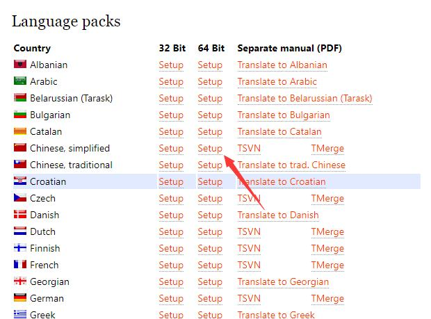

svn下载和汉化
2021年3月30日
SVN分为客户端、服务端，服务端用来存储代码，客户端用来提交代码到服务端，或者从服务端获取代码
SVNBucket提供的是SVN的服务端，也就是一个代码存储空间，或者说是SVN代码托管平台
在Windows上，我们最常用的svn客户端就是 TortoiseSVN/)
TortoiseSVN 当前最新版本是可以到 官网 | 第三方下载 查看并下载
如果你的系统是64位的，点击下图中红圈的按钮下载，如果是32位的系统，则点击第一个按钮
下载完成后，直接就是双击运行，然后一直是下一步的进行安装就好了
此时你安装的是英文版，如果你需要汉化，则在下载页面继续往下滚动，找到如下图下载中文语言包。如果官网打不开，点击 这里下载 汉化包

下载后也是直接双击安装就好了，这时候你的右键svn菜单就会变成中文的了
如果还有什么不懂，还可以看下更详细的 svn视频教程